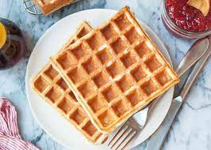

Waffles

Home made simple waffles
These home made waffles as quick and easy to make with simple ingredients.
Cook to a golden brown and serve with butter or you your favorite syrup.
Ingredients
- 2 cup flour
- 1 cup water
- 1 cup milk (2%)
- 6 tbs sugar
- 6 tsp baking powder
- 2 eggs
- 1 tbs vanila
- 2 tbs vegetable oil
Directions
- Preheat waffle press
- Mix flour, baking powder and sugar in medium mixing bowl.
- Mix water, milk, eggs, vanila and oil in separate large mixing
bowl and wisk together
- Slowly add dry ingredients into wet ingredients while wisking together.
- Pour half cup of batter onto heated waffle press and close press.
- Remove when golden brown and serve hot with butter and/or syrup.